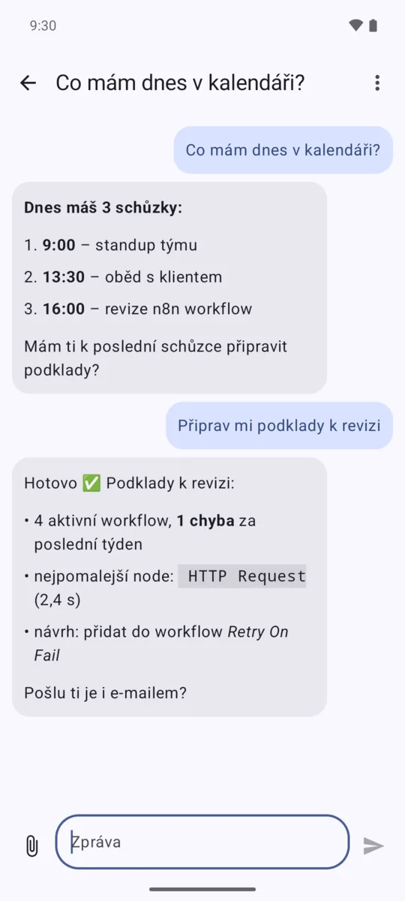
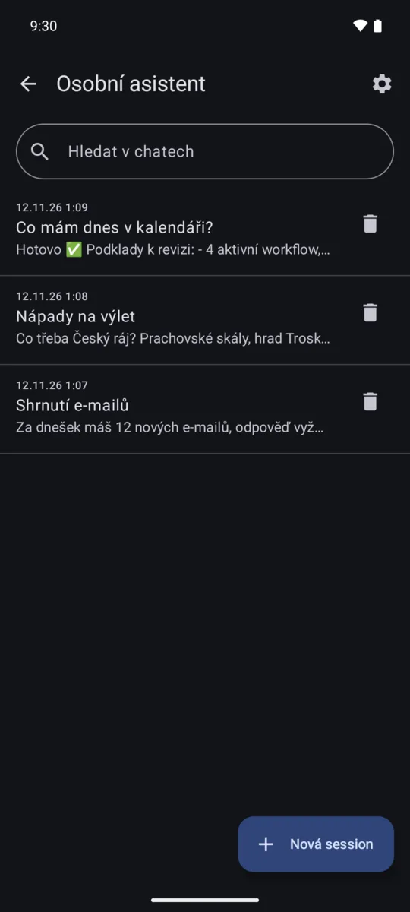
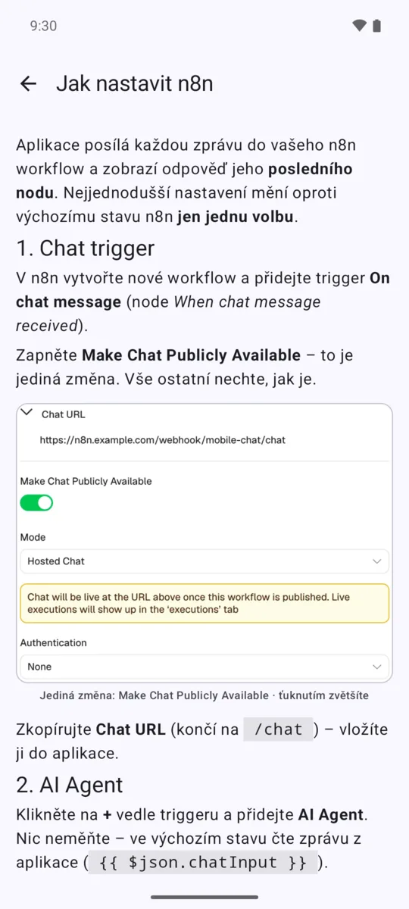

n8n Chat
Mobilní chat pro vaše n8n workflow a AI agenty. Pište z telefonu, odpověď přijde z posledního nodu workflow.
Již brzy na Google Play



Chat s vaším workflow
- Zprávy jdou přímo na webhook vašeho n8n, odpověď přijde z posledního nodu.
- Odpovědi se zobrazí s Markdownem – seznamy, tučné písmo, kód.
- Obrázek nebo PDF z workflow se zobrazí jako příloha.
- Odpověď naskakuje průběžně (streaming) a dorazí i po zavření aplikace – s notifikací.
Servery a session
- Libovolný počet n8n serverů a webhooků.
- Každý chat je samostatná session s vlastním ID – AI agent si pamatuje kontext.
- Starší chaty zůstávají i s historií, dají se prohledávat, přejmenovat a připnout.
- Zástupce serveru na ploše otevře novou session jedním ťuknutím.
Bezpečnost a soukromí
- Autentizace Basic, Header, JWT i přihlášení účtem n8n (n8n User Auth).
- Údaje i historie jsou v telefonu šifrované, komunikace jen přes HTTPS.
- Volitelný zámek aplikace otiskem prstu, obličejem nebo zámkem obrazovky.
- Žádné účty, reklamy ani analytika – data jdou jen na váš server.
Přílohy, hlas a sdílení
- Posílejte soubory i fotky přímo z fotoaparátu, workflow je dostane jako binární data.
- Diktujte zprávy hlasem a nechte si odpovědi přečíst nahlas.
- Sdílejte text nebo soubory z jiných aplikací rovnou do chatu.
Snadné nastavení
- Stačí výchozí nastavení n8n s jedinou změnou.
- Návod s printscreeny krok za krokem je přímo v aplikaci.
- Pokročilí si mohou upravit formát požadavku i cestu k odpovědi.
8 jazyků a tmavý režim
- Čeština, angličtina, čínština, němčina, španělština, francouzština, polština a slovenština.
- Jazyk podle telefonu nebo vlastní volba.
- Světlý a tmavý režim podle nastavení telefonu.
Jak začít
- V n8n přidejte trigger On chat message a zapněte Make Chat Publicly Available. Zkopírujte Chat URL.
- Připojte AI Agent s modelem a Simple Memory – obojí ve výchozím nastavení – a workflow publikujte.
- V aplikaci přidejte server, vložte Chat URL a pište.
Podrobný návod s printscreeny, zabezpečením přístupu a pokročilou variantou s Webhook node najdete přímo v aplikaci pod ikonou ⓘ.
Autor
Aplikaci vytvořil Jan Kuthan – senior vývojář, architekt a team lead se zaměřením na vývoj webových aplikací, praktické využití AI a školení. Dotazy a nápady posílejte přes stránku Podpora.